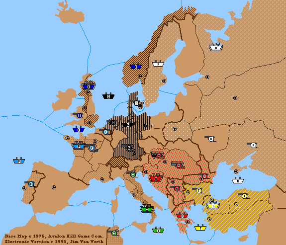

Dippouch F1995B

Orders
Austria: Build A Budapest, Build F Trieste, Build A Vienna
England: Build F Edinburgh
France: Build F Brest, Build A Paris
Germany: Build F Kiel, Build A Munich
Italy: Build F Naples
Russia: Build F St. Petersburg North Coast
Turkey: Build F Constantinople
Units
Austria: A Bud, F Gre, A Rum, A Ser, F Tri, A Vie
England: F Edi, F Eng, F Nor, A Wal
France: A Bel, F Bre, F MAO, A Par, A Por
Germany: A Den, A Hol, F Kie, A Mun, F Nth
Italy: F Ion, F Nap, A Tun, A Ven
Russia: F Bla, A Sev, F StP, F Swe, A Ukr
Turkey: F Aeg, A Ank, A Bul, F Con
Supply Centers
Austria: Bud, Gre, Rum, Ser, Tri, Vie
England: Edi, Lpl, Lon, Nor
France: Bel, Bre, Mar, Par, Por
Germany: Ber, Den, Hol, Kie, Mun
Italy: Nap, Rom, Tun, Ven
Russia: Mos, Sev, StP, Swe, War
Turkey: Ank, Bul, Con, Smy
Unowned: Spa
[ dippouch ][ The Map | " The State of the Bourse" | Rankings | Portfolios | Investors | Past Rounds ]
[ The Zine | Online Resources | Showcase | Email | Postal | Face to Face ]
The Diplomatic Pouch is brought to you by the DP Council.
The Diplomacy Showcase section is maintained by Stephen Beaulieu (hippo@mail.utexas.edu)
Last updated on Tue, Jan 16, 1996.
{kind=link}